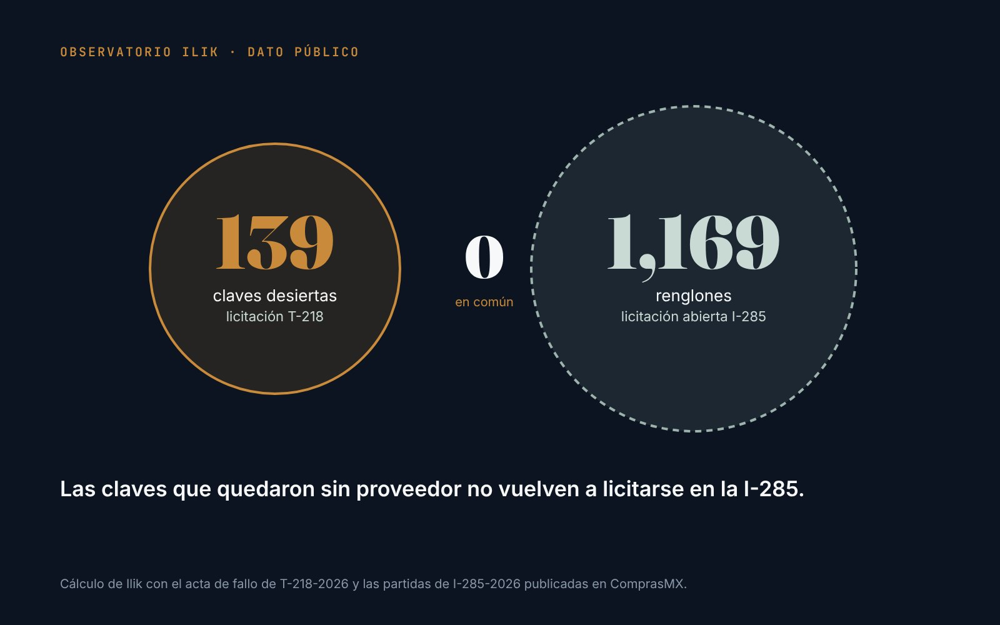

Observatorio / Compras públicas de medicamentos
Dato públicoNinguna de las 139 claves desiertas está en la licitación que viene
La licitación abierta I-285 no incluye las claves de medicamento que quedaron sin proveedor en la compra de genéricos 2027/2028. Su cobertura depende de procedimientos que el gobierno anunció y que al 27 de octubre no tenían fallo publicado.

La compra consolidada de genéricos, oncológicos y antiinfecciosos para 2027 y 2028, la licitación T-218, dejó 139 claves desiertas: 89 sin propuesta técnicamente solvente, 30 en la evaluación económica y 20 sin propuesta.1
La otra licitación del ciclo que sigue abierta, la I-285, es internacional abierta: a diferencia de la T-218, admite productos de cualquier origen, incluidos India y China. Revisamos sus 1,169 renglones: 1,083 son de material de curación, 78 de medicamentos y 8 de laboratorio y otros químicos. Ninguna de las 139 claves desiertas de la T-218 aparece entre ellos.12
Que no estén ahí no significa que el gobierno las haya dejado de lado. Según reportes de prensa, la Secretaría de Salud anunció procedimientos adicionales para lo que no se adjudicó, a realizarse antes de que termine 2026, y Reforma reportó como alternativas la adjudicación directa a participantes o las compras propias de cada institución.345 Al 27 de octubre, la I-285 tampoco tenía fallo publicado: estaba programado para el 13 de octubre.2
Para un hospital privado, la lectura es práctica. Entre las desiertas hay soluciones para diálisis peritoneal, Hartmann, electrolitos, penicilinas e imipenem, de uso diario.1 Si el gobierno sale a comprarlas con urgencia en los primeros meses de 2027, competirá por la misma oferta que el canal privado. Conviene asegurar el inventario de esas claves para el primer trimestre antes de diciembre.
Nota metodológica
Cruzamos por clave del Compendio Nacional de Insumos la lista de claves desiertas del acta de fallo de la T-218 (sección V, leída con reconocimiento óptico de texto y revisada contra la imagen) con las 1,169 partidas de la I-285 publicadas en ComprasMX y consultadas el 27 de octubre de 2026. Una clave que hubiera cambiado de código entre procedimientos no aparecería en el cruce. El misoprostol de 200 µg, desierto en envase de 12 tabletas, sí aparece en la I-285 en envase de 28 tabletas. Correcciones y comentarios: contacto@ilikanalytics.com.
Transparencia. Ricardo Rodríguez, fundador de Ilik, trabajó en Laboratorios PiSA hasta julio de 2026. Este análisis usa solo documentos públicos. Ilik ofrece servicios de inteligencia de compras a hospitales privados.
Fuentes
- Birmex. Acta de fallo de LA-12-NEF-012NEF001-T-218-2026, 25 de septiembre de 2026, publicada en ComprasMX. Ver en comprasmx.buengobierno.gob.mx ↩
- Birmex. Ficha y partidas de LA-12-NEF-012NEF001-I-285-2026, consultadas el 27 de octubre de 2026 en ComprasMX. Ver en comprasmx.buengobierno.gob.mx ↩
- N+. "Salud concluye compra consolidada de medicamentos para 2027-2028 por 84 mil mdp". Ver en nmas.com.mx ↩
- Expansión Política. Compra de medicamentos 2027/2028, 4 de octubre de 2026. Ver en politica.expansion.mx ↩
- Plano Informativo (Reforma). "Amarra Birmex megacompra; 82% de medicinas". Ver en planoinformativo.com ↩

Fundador de Ilik. Estadístico de formación, con más de ocho años al frente de la inteligencia comercial del canal hospitalario privado en la industria farmacéutica.